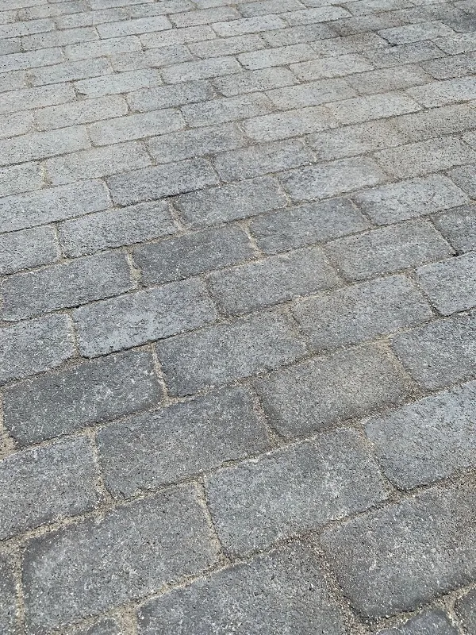

En Provence, les espaces extérieurs se vivent autant que l'intérieur. Terrasse, tour de piscine, cuisine d'été, allée d'accès : ces surfaces méritent un revêtement durable, esthétique et adapté aux conditions climatiques. Chez ABC Carrelage, nous réalisons des aménagements extérieurs depuis 2015 dans tout le sud des Alpes-de-Haute-Provence, de Manosque à Oraison, et jusqu'à Aix-en-Provence. Voici notre guide pour réussir votre projet.
La terrasse
La terrasse est l'aménagement extérieur le plus courant. Plusieurs techniques de pose existent, chacune adaptée à une situation spécifique.
Carrelage collé sur dalle béton
C'est la technique classique. Le carrelage est collé directement sur une dalle béton existante ou neuve. Le support doit être plan, sec et propre. On utilise une colle extérieure flexible, C2S1 minimum, et des joints souples pour absorber les mouvements de dilatation. Le grès cérame pleine masse en 20 mm d'épaisseur est le matériau de référence : résistant au gel, aux UV et aux taches. Comptez 55 à 120 euros le m² pose comprise selon le format et la qualité du carrelage.
Carrelage sur plots sans dalle
La pose sur plots permet de créer une terrasse sans couler de dalle béton. Les dalles de grès cérame, en 60x60 ou 80x80 et en 20 mm d'épaisseur, sont posées sur des plots réglables en hauteur. Les avantages : pas de travaux de maçonnerie, passage des réseaux sous la terrasse, démontage possible et drainage naturel entre les dalles. Le budget se situe entre 65 et 110 euros le m². Cette technique convient particulièrement aux terrasses surélevées ou quand la dalle existante n'est plus en bon état. Pour tout savoir, lisez notre guide dédié au carrelage sur plots.
Pierre naturelle : travertin et ardoise
Le travertin apporte une touche méditerranéenne élégante. Sa surface naturellement irrégulière offre un rendu chaleureux et une bonne adhérence pieds nus. L'ardoise, plus sombre, crée un contraste contemporain. Ces pierres naturelles nécessitent un traitement hydrofuge après la pose et un entretien régulier, nettoyage à l'eau et re-traitement tous les 2 à 3 ans. Elles sont plus sensibles aux taches que le grès cérame, mais leur esthétique est incomparable.
Tour de piscine
L'aménagement des abords de piscine est un chantier technique qui demande un savoir-faire spécifique.
Travertin sans margelle : la spécialité ABC
Notre réalisation à Aix-en-Provence illustre cette approche. Le travertin est posé bord à bord autour du bassin, sans margelle rapportée. Le rendu est épuré, les lignes sont nettes, et la surface est continue du bord de la piscine jusqu'au reste de la terrasse. Ce type de pose demande une découpe précise au millimètre et une étanchéité périphérique irréprochable. Le résultat : un espace piscine haut de gamme, agréable sous les pieds et visuellement homogène.

Contraintes techniques piscine
Le revêtement en bord de piscine doit respecter la norme antidérapant R12, pieds nus sur surface mouillée. C'est une obligation de sécurité. Le travertin bouchonné et le grès cérame structuré répondent à cette exigence. Le matériau doit aussi résister au chlore et aux produits de traitement de l'eau, qui attaquent les revêtements poreux non protégés. Enfin, la pente d'évacuation des eaux de ruissellement, 1,5 % minimum, doit éloigner l'eau du bassin pour éviter les retours d'eau polluée. Comptez 80 à 150 euros le m² pour un tour de piscine en travertin, fourniture et pose comprises.
Cuisine extérieure
La cuisine d'été est devenue un vrai poste d'aménagement. Le sol et les surfaces de travail doivent résister aux projections de graisse, aux chocs et au nettoyage fréquent.
Sol résistant
Le grès cérame pleine masse en finition structurée est le choix le plus pratique. Il se nettoie facilement, ne craint pas les taches de graisse et résiste aux chocs. Les formats rectangulaires, 30x60 ou 60x120, en imitation pierre donnent un rendu naturel adapté à une ambiance extérieure.
Crédence et plan de travail
Le carrelage grand format en fine épaisseur, 6 mm, permet de réaliser des crédences et des plans de travail monolithiques. Le grès cérame imitation marbre ou béton offre un rendu contemporain et une surface parfaitement hygiénique. Nous découpons les plaques sur mesure pour intégrer l'évier, les plaques de cuisson et les prises.
Pavés autobloquants
Les pavés autobloquants sont la solution pour les allées d'accès, les cours et les entrées de garage. Ils supportent le passage de véhicules et ne nécessitent quasiment aucun entretien. Notre réalisation à Oraison en pavés anthracite illustre ce savoir-faire : un calepinage en chevrons sur lit de sable compacté, avec bordures de maintien en béton. Le rendu est structuré, élégant et durable.

Contraintes spécifiques aux extérieurs
L'aménagement extérieur obéit à des règles techniques strictes. Les ignorer, c'est s'exposer à des dégradations rapides.
Résistance au gel : grès cérame pleine masse
En Provence, les nuits hivernales descendent régulièrement sous zéro, surtout dans les Alpes-de-Haute-Provence. Le carrelage extérieur doit être antigel : le grès cérame pleine masse, avec une absorption d'eau inférieure à 0,5 %, est le seul matériau céramique garanti antigel. Les carrelages émaillés classiques absorbent l'eau, gèlent et éclatent. Ne faites pas cette erreur.
Pente d'évacuation de 1,5 %
Toute surface extérieure doit avoir une pente minimum de 1,5 %, soit 1,5 cm par mètre, pour évacuer l'eau de pluie. Cette pente est orientée vers le jardin, un caniveau ou un siphon de sol. Sans pente suffisante, l'eau stagne, s'infiltre sous le carrelage et provoque des décollements au gel.
Joints de dilatation tous les 20 à 25 m²
Les variations de température en extérieur sont bien plus importantes qu'à l'intérieur. Le carrelage et la dalle se dilatent et se contractent. Des joints de dilatation souples, en mastic polyuréthane, doivent être placés tous les 20 à 25 m² et en périphérie, contre les murs et les poteaux. Oublier ces joints, c'est garantir des fissures et des soulèvements au bout de quelques saisons.
Nos réalisations extérieures
Quelques exemples de chantiers extérieurs réalisés par ABC Carrelage :
- Piscine à Aix-en-Provence : tour de piscine complet en travertin sans margelle, terrasse attenante, rendu contemporain et homogène.
- Terrasse à Forcalquier : carrelage imitation parquet associé à des hexagonaux effet cube 3D, un rendu graphique et moderne en extérieur.
- Pavés à Oraison : allée d'accès en pavés autobloquants anthracite, calepinage en chevrons, bordures béton.
Retrouvez d'autres exemples sur notre page réalisations, ou prenez rendez-vous pour une visite à domicile avec le camion d'échantillons.
Questions fréquentes
Quel carrelage choisir pour une terrasse extérieure ?
Le grès cérame pleine masse est le choix le plus fiable. Il résiste au gel, aux UV, aux taches et ne nécessite aucun traitement. Privilégiez une épaisseur de 20 mm pour une pose sur plots, ou 10 mm minimum pour une pose collée sur dalle béton. La pierre naturelle, travertin ou ardoise, est aussi une option, mais elle demande un traitement hydrofuge régulier.
Peut-on carreler autour d'une piscine sans margelle ?
Oui. La pose de travertin bord à bord autour du bassin, sans margelle rapportée, donne un rendu épuré et contemporain. C'est une de nos spécialités. Le travertin est naturellement antidérapant et agréable pieds nus. Il faut prévoir une pente d'évacuation et une étanchéité soignée en périphérie. Demandez un devis pour votre projet piscine.
Quel budget prévoir pour une terrasse carrelée ?
Le budget varie selon la technique. Terrasse collée sur dalle existante : 55 à 120 euros le m². Terrasse sur plots : 65 à 110 euros le m². Tour de piscine en travertin : 80 à 150 euros le m². Ces fourchettes incluent fourniture et pose. Appelez le 06 52 25 12 26 pour un chiffrage adapté à votre projet.
Le carrelage extérieur résiste-t-il au gel en Haute-Provence ?
Seul le grès cérame pleine masse, avec une absorption d'eau inférieure à 0,5 %, est garanti antigel. Les carrelages émaillés classiques absorbent l'eau, gèlent et éclatent. Dans les Alpes-de-Haute-Provence où les nuits hivernales descendent sous zéro, c'est un critère non négociable.
À lire aussi

Carrelage sur plots : la terrasse sans dalle béton
Pose sur plots réglables, formats, épaisseurs et avantages pour votre terrasse extérieure.

Carrelage grand format : ce qu'il faut savoir
60x60, 60x120, 80x80 : pourquoi le grand format séduit et comment réussir la pose.

Pourquoi votre carrelage fissure, et comment l'éviter
La chape est souvent la cause. Les raisons des fissures et comment les prévenir.